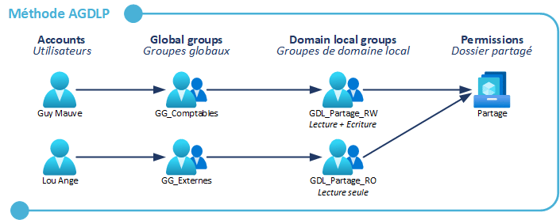
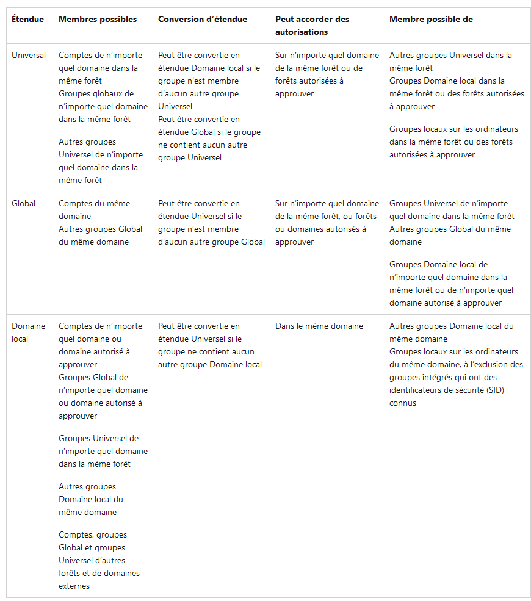
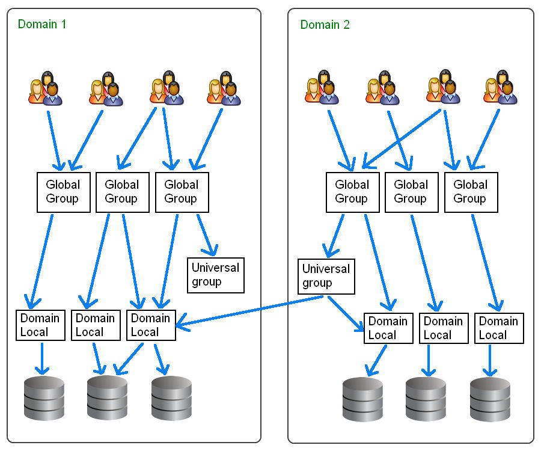

AGDLP/AGUDLP
AGDLP → Account Global Domain Local Permission
AGUDLP → Account Global Universal Domain Local Permission
Méthode AGDLP → Gérer les droits sur un serveur de fichiers Windows Server. (Méthode recommandée par Microsoft)
Utiliser l'imbrication des groupes de sécurité et des étendues liées aux groupes de sécurité.
L'utilisateur doit être membre d'un groupe de sécurité global. Ce groupe est ensuite ajouté comme membre d'un groupe de sécurité domaine local, qui a une portée uniquement sur le domaine d'appartenance. Ce groupe de sécurité de domaine local est utilisé pour ajuster les permissions NTFS sur le répertoire partagé.
Cette méthode permet de bien structurer les droit d'accès et de faciliter leur gestion. C'est donc un gain de temps pour l'administrateur.
Pourquoi deux types de groupe ? Pour des raisons de sécurité, en cas d'infection d'un serveur, les risques de propagation sont limités, car les droits sont seulement attribués aux groupes de sécurité d'étendue domaine local.

Dossier partage sur un serveur de fichiers. Il faut définir des droits pour ce dossier. Il faut attribuer des autorisations lecture/écriture pour certains utilisateurs, ainsi que des autorisations de lecture seule pour d'autres.
On ne veut pas accorder d'autorisations directement à un utilisateur. Il est important de respecter l'imbrication des groupes.
On crée donc 4 groupes. Les membre du groupe comptables auront donc les autorisations lecture et écriture sur le dossier. Cette autorisation est accordée grâce à l'appartenance au groupe Partage_RW.
Convention de nommage :
GG → Groupe de sécurité de portée globale
GDL → Groupe de sécurité de portée domaine local
RW → Pour les groupes permettant de bénéficier des droits lecture + écriture
RO → Pour les groupes permettant de bénéficier seulement des droits de lecture
On peut donc savoir en regardant le nom des groupes, leur utilité.
On peut voir que le groupe GDL_Partage_RO ne contient pas d'utilisateurs. C'est le groupe GG_Externes qui en est membre, et celui-ci contient des utilisateurs.
Une fois que les groupes sont en place, il ne reste plus qu'à configurer les permissions de partage et les permissions NTFS. Pour cela, on utilise les groupes GDL_
Il ne restera plus qu'à vérifier que les permissions s'appliquent correctement pour les utilisateurs.
On peut également avoir un groupe global ajouté à plusieurs groupes de domaine local.
En appliquant cette méthode, les droits sont donc plus faciles à gérer, puis à maintenir. Au delà de cette méthode, le plus important est de bien nommer les groupes pour que ce soit plus facile à comprendre. L'arborescence du serveur de fichiers doit également bien être pensée.
AGUDLP → Ajout des groupes Universels
Sécurité ?
Groupe de sécurité → Permet d'accorder des droits à des utilisateurs. Permet de limiter leurs actions au sein d'un domaine, d'une forêt.
On donne des autorisations aux groupes plutôt qu'aux utilisateurs.
Distribution ?
Groupe de distribution → Utilisé uniquement pour l'envoi de mails à l'aide d'une application comme Exchange Server. Les groupes de distribution ne sont pas activés pour la sécurité.
Universelle ?
Domaine local ?
Global ?

